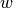

API Documentation¶
GATHODE¶
- class platereader.plate.Plate(filename=None, fileformat=None, time=None, rawOds=None, sampleIds=None, conditions=None, wellids=None, plateId=None)¶
Bases: object
Class containing the wells and holding plate-wide parameters.
Constructor.
If filename is not None and fileformat is None some heuristics are used to identify the file format.
Parameters: - filename (str) – name of serialised Plate or ascii file exported by the plate reader.
- fileformat (str) – string indicating the format (‘gat’, ‘tecan’)
- time (numpy.array(float)) – array of timepoints when optical density was measured
- rawOds (list( numpy.array(float) )) – list of optical density arrays
- sampleIds (list(str)) – list of sample names corresponding to the array of optical densities
- conditions (list(str)) – list of conditions under which the samples where grown
- plateId (str) – name of this plate
- save(filename)¶
Saves the plate content in a file.
Parameters: filename (str) – Name of the file. Returns: StatusMessage/None – non-fatal notifications.
- static capitaliseId(sampleId, capitaliseThese)¶
Capitalise id if in given list.
Parameters: - sampleId (str) – sample id; if this matches capitaliseThese it will be capitalised
- capitaliseThese (list(str)) – list of sample ids that correspond to samples that should be capitalised
Returns: str – sample id (capitalised if it matches one of capitaliseThese)
- wellMetadataOk(metadata)¶
Check that the given metadata (i.e. sample id, growth condition) is valid and can be applied.
This basically checks that there is the right amount of metadata entries and these contain sample ids and conditions.
Parameters: metadata (list(dict)) – array of metadata dictionaries Returns: bool, StatusMessage – True if ok, False otherwise (and a StatusMessage with details)
- setWellMetadata(metadata)¶
Set the metadata (e.g. sample id, growth condition) of the wells.
Parameters: metadata (list(dict)) – array of metadata dictionaries
- wellMetadata()¶
Return the metadata of the wells.
Returns: list(dict) – metadata
- backgroundReplicateGroupIndices()¶
Return indices into self.replicateGroups for replicate groups being listed as background.
Returns: list(int) – indices of background replicate groups
- backgroundReplicateGroups()¶
Return replicate groups being listed as background.
Returns: list(Replicate) – replicate groups listed as background
- backgroundWellIndices()¶
Return indices into self.wells for wells being listed as background.
Returns: list(int) – indices of background wells
- backgroundWells()¶
Return wells being listed as background.
Returns: list(Replicate) – wells listed as background
- replicateGroupIdxForSampleCondition(sampleid, condition)¶
Return index of replicate group with the given sample Id and condition.
Parameters: - sampleid (string) – Id of the sample.
- condition (string) – Condition under which the sample was grown.
Returns: int – Index (into self.replicateGroups) of Replicate with given id and condition.
- replicateGroupForSampleCondition(sampleid, condition)¶
Return index of replicate group with the given sample Id and condition.
Parameters: - sampleid (string) – Id of the sample.
- condition (string) – Condition under which the sample was grown.
Returns: Replicate – replicate group with given id and condition.
- replicateGroupIdcsForCondition(condition)¶
Return a list of indices of replicate groups with the given condition.
Parameters: condition (string) – Condition under which the samples were grown. Returns: list(int) – Indices (into self.replicateGroups) of replicate groups with the given condition.
- replicateGroupsForCondition(condition)¶
Return a list of replicate groups with the given condition.
Parameters: condition (string) – Condition under which the samples were grown. Returns: list(Replicate) – Replicate groups with given condition.
- conditions()¶
Return a list of conditions.
Returns: list(str) – Conditions.
- nonBackgroundReplicates()¶
Returns: list(Replicate) – replicate groups that are not background samples.
- nonBackgroundReplicateIndices()¶
Returns: list(Replicate) – Indices of replicate groups that are not background samples.
- nonBackgroundWells()¶
Returns: list(Replicate) – wells that are not background samples.
- getParameter(par)¶
Return the requested parameter.
Parameters: par (str) – The name of the parameter. If the parameter is explicitly set for the plate, this value returned. Otherwise return None.
See chapter parameters for details of parameter handling and available parameters.
- parameterIsEditible(par)¶
Return True if this is a parameter can have a plate-wide default.
Returns: bool – True if parameter can be edited. Some parameters can only be changed per Replicate, some only per Plate. This method is used to distinguish between them.
See chapter parameters for details of parameter handling and available parameters.
- parameterIsExplicitlySet(par)¶
Return True if this is parameter is explicitly set.
Parameters: par (str) – The name of the parameter. Returns: bool – True if parameter is explicitly set. If a parameter is explicitly set for a replicate it overrides an inherited value. This method is used to tell whether this is the case. Since this object is a plate it tells whether a default value has been set.
See chapter parameters for details of parameter handling and available parameters.
- activeChildReplicatesHaveExplicitParameter(par)¶
Return True if for at least one of the replicate groups the given parameter is explicitly set.
Parameters: par (str) – The name of the parameter. Returns: bool – True if parameter is explicitly set in one of the replicate groups. See chapter parameters for details of parameter handling and available parameters.
- setMaxGrowthLowerTimeCutoff(t)¶
Set lower limit of interval in which the maximal growth should be searched.
- setMaxGrowthUpperTimeCutoff(t)¶
Set upper limit of interval in which the maximal growth should be searched.
- setLogOdCutoff(lod)¶
Set cutoff value of log(OD).
- setLagAtLogOdEquals(lagat)¶
Set value of log(OD) used to define the lag time.
- setHighDensityCorrectionLinear(hdCorrectionLinear=None)¶
Set coefficient of linear term of high density correction.
- setHighDensityCorrectionQuadratic(hdCorrectionQuadratic=None)¶
Set coefficient of quadratic term of high density correction.
- setHighDensityCorrectionCubic(hdCorrectionCubic=None)¶
Set coefficient of cubic term of high density correction.
- setSmoothingK(k)¶
Set degree of the smoothing spline.
- setSmoothingS(s)¶
Set smoothing factor used to choose the number of knots.
- setSlidingWindowSize(win)¶
Set number of datapoints of sliding windows.
The value that is used for local exponential fit (growth rate) and linear regression (growth yield).
- static guessWellIds(numberOfWells)¶
Return well ids by guessing the plate layout based on number of wells.
This function will return A1-P24 or A1-H12.
Parameters: numberOfWells (int) – number of wells of the plate Returns: list(str) – the guessed well ids (None if layout could not be guessed)
- static availableColumnsForCsvExport(logOdDerivativeProperties=True)¶
List the available properties that can be chosen for csv export.
Parameters: logOdDerivativeProperties (bool) – include properties determined from log(OD) derivative Returns: list(str), list(str) – fixed columns (ids), properties The ‘fixed columns’ list contains the sample/condition tuples which should always be exported in order to identify the replicates. For the other properties (except ‘wellids’) the variance can be chosen by adding ‘_var’ to the property name.
- growthParametersToCsv(filename, addVarianceColumns=True, singleWells=False, columns=None, progressCall=None, **csvkwargs)¶
Write a “comma seperated values” (csv) file of properties for all replicate groups.
Parameters: - filename (string) – Filename.
- columns (list(str)) – List of properties that shall get exported (in that order).
- addVarianceColumns (bool) – For each entry in columns add the corresponding variance
- singleWells (bool) – Export properties of single well replicates instead of replicate groups
- progressCall (@fun(int)) – Function that will be called on each iteration.
- csvkwargs (dict()) – Parameters which are passed on to the csv module; defaults to { ‘dialect’: ‘excel’ }
- timeseriesToCsv(filename, addVarianceColumns=True, singleWells=False, columns=None, fullId=False, progressCall=None, **csvkwargs)¶
Write a “comma seperated values” (csv) file of time series for all replicate groups.
Parameters: - filename (string) – Filename.
- columns (list(str)) – List of time series that shall get exported for each replicate.
- addVarianceColumns (bool) – For each entry in columns add the corresponding variance
- singleWells (bool) – Export time series of single well replicates instead of replicate groups
- fullId (bool) – Label the columns with the full id (including well ids) instead of “sample condition”
- progressCall (@fun(int)) – Function that will be called on each iteration.
- csvkwargs (dict()) – Parameters which are passed on to the csv module; defaults to { ‘dialect’: ‘excel’ }
- static writeMetadata(filename, metadata, metadataKeys, plateformat='96', **csvkwargs)¶
Parameters: metadata (list(dict)) – the metadata
- static readMetadata(filename, plateformat='96', **csvkwargs)¶
Read metadata from a csv file.
For each metadata key a table is read. The table should be laid out as according to the plate layout. To get a template, call writeMetadata(outfile,[{} for i in range(numOfColumns)],Plate.metadataKeys)
- exception Error¶
Bases: exceptions.Exception
Base class for exceptions in this module.
- exception Plate.MultipleBackgroundIdsError(backgroundSampleIds)¶
Bases: platereader.plate.Error
Exception raised if there are different IDs for background wells.
- exception Plate.UnknownFileFormat(filename, serFormat=None, serFormatVersion=None, detailedError=None)¶
Bases: platereader.plate.Error
Exception raised when an unsupported serialisation format is opened.
- exception Plate.BadMetadata(detailedError=None, lineno=None, filename=None)¶
Bases: platereader.plate.Error
Exception raised when an unsupported serialisation format is opened.
- class platereader.replicate.Replicate(parentPlate=None, wellIndices=None, sampleid=None, condition=None, wellids=None, activeWellIndices=None, isReplicateGroup=False, _unpickled=None, _serialiseFormat=None)¶
Bases: object
A time series of optical density measurements for a single well or a group of replicates.
Constructor.
Parameters: - parentPlate (Plate) – Object of the plate this well/replicate group is part of.
- wellIndices (list(int)) – Indices into the parent-plate’s array of well objects.
- sampleid (str) – Identifier of this Replicate.
- condition (str) – Growth condition of this Replicate.
- wellids (list(str)) – Identifiers denoting the location(s) of this replicate’s wells within the plate.
- activeWellIndices (list(int)) – Indices into the vector of child wells of this replicate group (from interval [0,len(wellIndices)[)
- isReplicateGroup – Whether this is a replicate group (not a single well)
- isReplicateGroup – bool
Note
The following two parameters should only be used when implementing a deserialiser.
Parameters: - _unpickled – dictionary of serialised Replicate object; used by plate deserialisation code.
- _unpickled – dict
- _serialiseFormat – format of serialisation; used by plate deserialisation code.
- _serialiseFormat – str
- fullId(withPlateId=False)¶
Return string containing enough information to uniquely identify this Replicate.
Parameters: withPlateId (bool) – If True includes the identifier string of the plate. Returns: str – A human readable string identifying this well/set of wells. The string contains enough information to uniquely identify the well (sample id, condition, well location, active child wells)
- replicateGroupParent()¶
Returns: Replicate – The replicate group this well is a child of. A single-well usually is part of a replicate group. The child objects of a replicate group are used to calculate properties such as growth rate, lag time etc. This method returns the replicate group parent if this is a single-well object.
- isReplicateGroup()¶
Returns: bool – True if this is a replicate group (not a single well). For details see the documentation of replicateGroupParent.
- childWellIndices()¶
Return the indices into the plate’s single-well object array.
Returns: list(int) – Absolute indices of all child wells. Note
the indices are global indices into the array of single-well objects of the plate.
- childWells()¶
Return the single-well child objects.
Returns: list(Replicate) – child wells of this replicate.
- setActiveChildWellIndices(activeWellIndices)¶
Set the active wells of this Replicate.
Parameters: activeWellIndices (list(int)) – Indices into the vector of child wells of this replicate group. A replicate group object consists of multiple wells (its children). This method changes which of these are used when calculating properties such as growth rate, lag time etc.
Note
these indices are local indices into the list of well indices of this replicate group, i.e. the maximal value should be (number of child wells - 1).
- activateChildWellIndex(index, value)¶
The child with the given index will be (de-)activated.
Parameters: - index (bool) – Index into the vector of child wells of this replicate group.
- value – Set to True to activate, False to deactivate.
For details see the documentation of setActiveChildWellIndices.
- activeChildWellIndices()¶
Return the indices of the active child-wells.
Returns: list(int) – Local indices of active child wells. Note
these indices are local indices into the list of well indices of this replicate, i.e. the maximal value should be (number of child wells - 1).
For details see the documentation of setActiveChildWellIndices.
- activeChildWells()¶
Return the objects of the active child-wells.
Returns: list(Replicate) – active child wells of this Replicate. For details see the documentation of setActiveChildWellIndices.
- activeChildWellIds()¶
Return ids of active child-wells as list of strings.
If well ids are set, return these, otherwise return the indices of the wells.
Returns: list(str) – A list of human readable strings identifying this’ active well/set of wells. For details see the documentation of setActiveChildWellIndices.
- activeChildWellIdStr()¶
Return ids of active child-wells as string.
If well ids are set, return these, otherwise return the indices of the wells.
Returns: str – A human readable string identifying this’ active well/set of wells.
- getParameter(par)¶
Return the requested parameter.
Parameters: par (str) – The name of the parameter. If the parameter is explicitly set for this replicate this value returned. Otherwise return an inherited value from either the replicate group this one is part of, or the plate default.
See chapter parameters for details of parameter handling and available parameters.
- parameterIsEditible(par)¶
Return True if this is a parameter that is editible for a Replicate.
Returns: bool – True if parameter can be edited. Some parameters can only be changed per Replicate, some only per Plate. This method is used to distinguish between them.
See chapter parameters for details of parameter handling and available parameters.
- parameterIsExplicitlySet(par)¶
Return True if this is parameter is explicitly set.
Parameters: par (str) – The name of the parameter. Returns: bool – True if parameter is explicitly set. If a parameter is explicitly set for a replicate it overrides an inherited value. This method is used to tell whether this is the case.
See chapter parameters for details of parameter handling and available parameters.
- activeChildReplicatesHaveExplicitParameter(par)¶
Return True if this is a ReplicateGroup and for at least one of the active child-wells the given parameter is explicitly set.
Parameters: par (str) – The name of the parameter. Returns: bool – True if parameter is explicitly set in one of the active child wells. See chapter parameters for details of parameter handling and available parameters.
- hdCorrectionLinear()¶
Returns: float – Coefficient of linear term of high density correction.
- hdCorrectionQuadratic()¶
Returns: float – Coefficient of quadratic term of high density correction.
- hdCorrectionCubic()¶
Returns: float – Coefficient of cubic term of high density correction.
- smoothingK()¶
Returns: int – Degree of the smoothing spline.
- smoothingS()¶
Returns: float – Smoothing factor used to choose the number of knots.
- maxGrowthLowerTimeCutoff()¶
Returns: float – Lower limit of interval in which the maximal growth should be searched.
- maxGrowthUpperTimeCutoff()¶
Returns: float – Upper limit of interval in which the maximal growth should be searched.
- logOdCutoff()¶
Returns: float – Cutoff value of log(OD).
- slidingWindowSize()¶
Returns: int – Number of datapoints of sliding windows. The value that is used for local exponential fit (growth rate) and linear regression (growth yield).
- lagAtLogOdEquals()¶
Returns: float – Value of log(OD) used to define the lag time.
- allowMaxGrowthrateAtLowerCutoff()¶
Returns: bool – Whether or not the maximal growth rate is allowed at the interval limits.
- allowGrowthyieldSlopeNStderrAwayFromZero()¶
Returns: int – Number of standard errors the slope may be away from zero to detect stationary state of yield.
- setMaxGrowthLowerTimeCutoff(t)¶
Set lower limit of interval in which the maximal growth should be searched.
- setMaxGrowthUpperTimeCutoff(t)¶
Set upper limit of interval in which the maximal growth should be searched.
- setAllowMaxGrowthrateAtLowerCutoff(boolval)¶
(Dis)allow the maximal growth rate at the lower interval limit.
- setAllowGrowthyieldSlopeNStderrAwayFromZero(numTimesStderr)¶
Set number of standard errors the slope may be away from zero to detect stationary state of yield.
- rawOd()¶
Return the raw readout of the optical density.
The raw optical density is not preprocessed, i.e. the background has not been subtracted and it is not corrected for non-linearities at high densities.
- rawOdVar()¶
Return the variance of raw readout of the optical density.
- od()¶
Return the background- and high-density corrected optical density.
- odVar()¶
Return the variance of the background- and high-density corrected optical density.
- derivative()¶
Return the (left) derivative of the background- and high-density corrected optical density.
- smoothedOd()¶
Return smoothing spline of optical density.
Returns: numpy.array(float) – Smoothed optical density.
- smoothedOdDerivative()¶
Return derivative of smoothed optical density.
Returns: numpy.array(float) – Derivative of smoothed optical density.
- logOd()¶
Return the logarithm of the background- and high-density corrected optical density.
- logOdSmoothed()¶
Return smoothed logarithm optical density.
Returns: numpy.array(float) – Smoothed log(OD).
- logOdDerivative()¶
Return derivative of logarithmised optical density.
Returns: numpy.array(float) – Derivative of logarithmised optical density.
- logOdDerivativeFromNonLog()¶
Return derivative of logarithmised optical density (by chain rule).
Returns: numpy.array(float) – Derivative of logarithmised optical density.
- logOdDerivativeFromNonLogSmoothed()¶
Return smoothed derivative of logarithmised optical density (by chain rule).
Returns: numpy.array(float) – Derivative of logarithmised optical density.
- expFitsOd0Mu()¶
Return parameters for fitted exponential functions (two parameters: OD0 and mu).
Returns: numpy.array(float), numpy.array(float), numpy.array(float), numpy.array(float) – mean(mu), var(mu), mean(od0), var(od0) Exponential functions are fitted piecewise to  (see Fit window) data points. Note that the inital value assumes that for the first data point of the fit window; to convert it to the real time you should use the formula
 .
.
- expFitsMu()¶
Return parameters for fitted exponential functions (one parameter: mu).
Returns: numpy.array(float), numpy.array(float) – mean(mu), var(mu) Exponential functions are fitted piecewise to (see Fit window) data points. Only the growth rate
 is fitted, the first data point from is
used as initial value of the exponential function.
is fitted, the first data point from is
used as initial value of the exponential function.
- maxGrowthrateFromLogOdDerivative()¶
Return parameters for exponential function at maximal growth rate (determined from log(OD) derivative).
Returns: mean(mu), var(mu), mean(od0), var(od0), mean(maxt), var(maxt), mean(lag), var(lag), method, statuses
- maxGrowthrate()¶
Return parameters for exponential function at maximal growth rate (determined from fitted exponential functions).
Returns: mean(mu), var(mu), mean(od0), var(od0), mean(maxt), var(maxt), mean(lag), var(lag), method, statuses
- odSlopemaxIntercept()¶
Return maximal slope, intercept, time of maximal slope and time index of the (linear) OD.
Returns: float, float, float, float, float, float, numpy.array(int), StatusMessage – mean(slope), var(slope), mean(intercept), var(intercept), mean(timemax), var(timemax), timemaxIdcs, status
- growthyield()¶
Return estimate of the growth yield by looking for a slope (from linear regression in a time window) compatible with zero.
Returns: float, float, float, float, StatusMessage – mean(yield), var(yield), mean(timeOfYield), var(timeOfYield), status
- static growthrateToDoublingTime(mu, mu_var)¶
Calculate doubling time from growth rate.
Parameters: - mu (float) – The growth rate.
- mu_var (float) – The variance of the growth rate.
Returns: float, float – doubling time, variance of doubling time
CATHODE¶
- class platereader.cls.Cls(files=None, days=None, serialisedFilename=None)¶
Bases: object
- saveLightweight(filename)¶
Partially serialise CLS data and save to file.
Parameters: filename (str) – Name of the file. Returns: StatusMessage/None – non-fatal notifications. Allows to preserve the state of activated wells. The plates are not saved, therefore their relative file location must not change for the loading to work.
- clsReplicateGroupIdxForSampleCondition(sampleid, condition)¶
- clsReplicateGroupIdcsForCondition(condition)¶
- conditions()¶
- nonBackgroundClsIndices()¶
Returns: list(ClsReplicate) – ClsReplicate that are not background samples.
- nonBackgroundCls()¶
Returns: list(ClsReplicate) – Indices of ClsReplicate that are not background samples.
- numberOfNonBackgroundCls()¶
- viabilities(sampleConditionTuples)¶
- survivalToCsv(filename, showViabilities=True, columns=None, progressCall=None, **csvkwargs)¶
Parameters: csvkwargs (dict()) – Parameters which are passed on to the csv module; defaults to { ‘dialect’: ‘excel’ }
- static differencesInChildActivations(tc1, tc2, tc1idx, tc2idx)¶
Return differences in sample/condition of wells of two plates.
Returns: StatusMessage – None if no differences, otherwise a status message with the differences.
- exception Error¶
Bases: exceptions.Exception
Base class for exceptions in this module.
- exception Cls.PlateFileDoesNotExist(missingfiles)¶
Bases: platereader.cls.Error
Exception raised if a plate does not exist (anymore).
Cls does not store the data in itself, but rather uses existing Plate files. If these got (re)moved we cannot initialise Cls.
- exception Cls.UnknownFileFormat(filename, serFormat=None, serFormatVersion=None, detailedError=None)¶
Bases: platereader.cls.Error
Exception raised when an unsupported serialisation format is opened.
- class platereader.clsreplicate.ClsReplicate(parent=None, listOfOdReplicates=None, days=None, wellIndices=None, isReplicateGroup=False, wellids=None, sampleid=None, condition=None, status=<platereader.statusmessage.StatusMessage object at 0x45626d0>)¶
Bases: object
- isReplicateGroup()¶
Returns: bool – True if this is a replicate group. For details see the documentation of replicateGroupParent.
- childWellIndices()¶
Return the indices into the plate’s single-well object array.
Returns: list(int) – Absolute indices of all child wells. Note
the indices are global indices into the array of single-well objects of the plate.
- childWells()¶
Return the single-well cls objects.
Returns: list(Replicate) – child cls wells of this replicate.
- setActiveChildWellIndices(activeWellIndices)¶
Set the active wells indices.
A replicate group object consists of multiple wells (its children). This method changes which of these are used when calculating properties such as viability etc.
Note
these indices are local indices into the list of well indices of this replicate group, i.e. the maximal value should be (number of child wells - 1).
- activateChildWellIndex(index, value)¶
The child with the given index will be (de-)activated.
Parameters: - index (bool) – Index into the vector of child ClsReplicate of this replicate group.
- value – Set to True to activate, False to deactivate.
For details see the documentation of setActiveChildWellIndices.
- activeChildWellIndices()¶
Return the indices of the active children.
Returns: list(int) – Local indices of active child wells. Note
these indices are local indices into the list of well indices of this replicate, i.e. the maximal value should be (number of child wells - 1).
For details see the documentation of setActiveChildWellIndices.
- activeChildWells()¶
Returns: list(Replicate) – active child wells of this Replicate.
- activeChildWellIds()¶
Return ids of active wells as list of strings.
If well ids are set, return these, otherwise return the indices of the wells.
Returns: list(str) – A list of human readable strings identifying this’ active well/set of wells.
- activeChildWellIdStr()¶
Return ids of active wells as string.
If well ids are set, return these, otherwise return the indices of the wells.
Returns: str – A human readable string identifying this’ active well/set of wells.
- odReplicatesNdays()¶
Returns: list(Replicate), list(float) – replicate objects of the underlying plates, days.
- fullId()¶
Return string containing enough information to uniquely identify this ClsReplicate.
Returns: str – A human readable string identifying this well/set of wells. The string contains enough information to uniquely identify the well (sample id, condition, well location, active child wells)
- viability()¶
Calculate the viability.
Returns: list(float), list(float), list(float), StatusMessage – days, viability, var(viability), status.
- survivalIntegral()¶
Calculate the survival integral.
Returns: float, float, StatusMessage – survival integral, var(survival integral), status.
StatusMessage¶
- class platereader.statusmessage.StatusMessage(key=None, shortmsg=None, longmsg=None, severity=1, **kwargs)¶
Bases: object
Holds (multiple) status information.
This class allows to collect status information (e.g. for a dataset).
This class can be either a list of statuses or a single status.
For a single status, the message method returns a string representation of the status.
For a list of statuses, the message method returns a single string, consisting of one string representation for each status-type. If a status-type exists multiple times, only the highest priority message of this type is shown.
As an alternative to the message method, you can use type2status and assemble the required string yourself.
Initialise with a keyword and a dict of further parameters, or with a list of (sub)statuses.
Parameters: - key (string) – The key-type this single-status belongs to.
- shortmsg (string) – The short message.
- longmsg (string) – The long message.
- severity (Severity) – The severity (importance) of this message.
- kwargs (string) – Additional keywords that can be used in shortmsg and longmsg as keyword arguments for string format.
- isEmpty()¶
Return True if this is an empty StatusMessage.
Returns: bool – True if empty.
- statusesWithKey(key)¶
Return a list of all substatuses that have the given key.
Parameters: key (string) – The key-type that substatus should match. Returns: list(StatusMessage) – status messages of type key.
- addStatus(status)¶
Add a substatus to this status.
Parameters: status (StatusMessage) – The substatus that should be added. Raises exception if this object was not initialised as list of statuses.
- removeStatusesWithKey(key)¶
Remove all substatuses that have the given key.
Parameters: key (string) – The key-type that substatus should match. Returns: int – number of removed status messages.
- shortmessage()¶
Short message for this status (only works for primary status, not for list of statuses)
Returns: str – Short message describing this status.
- longmessage()¶
Long message for this status (only works for primary status, not for list of statuses)
Returns: str – Long message describing this status.
- messageType()¶
Message type for this status (only works for primary status, not for list of statuses)
Returns: str – String describing the type of this status.
- type2status()¶
Returns: dict – Dictionary that for each message type contains the highest priority message.
- message(withMsgType=True, seperator='; ')¶
Returns: str – Status message. For a list of (sub)statuses, only shows the one with the highest priority/severity for each category (message type).
- severity()¶
Returns: Severity – The severity/priority of this status. If this is a list of (sub)statuses return the higest.
- severity2()¶
Returns: Severity – The second-level severity/priority of this status. For this to work the parameter dict has to contain the ‘severity2’ entry; if this is not set return 0.
If this is a list of (sub)statuses return the higest.